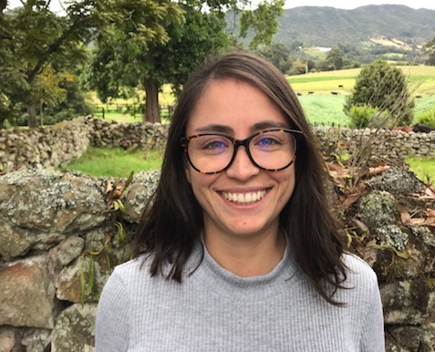

I am an advanced Ph.D. candidate in Political Science at Northwestern University. In my dissertation, titled "Trapped by Inequality: The Politics of Redistribution in Latin America", I identify the causes of economic inequality traps -i.e., high and persistent levels of economic inequality- in Latin America and explain how and why some countries manage to escape such traps and embark on paths of diminishing inequality.
While doing my PhD, I also completed a MS degree in Statistics at Northwestern. Before coming to the U.S, I did an MA and BA degrees in Economics from the University of Los Andes in my home country Colombia.
More broadly, my research and teaching interests are in the fields of comparative politics and methodology. Substantively, I focus on the political economic of inequality and political violence in Latin America. As a methodologist, I am interested in how to leverage multi-method tools to strengthen research designs and causal inference. Inequality and violence are perhaps the biggest problems facing Latin American societies today. Through my research and in my teaching, I strive to contribute to our understanding of such challenges and potential solutions towards escaping inequality and conflict traps.
These projects have been possible with the generous assistance of the Buffett Institute for Global Studies, The Kellogg Dispute Resolution Research Center (DRRC), The Latin American and Caribbean Studies and the Political Science Department at Northwestern University.